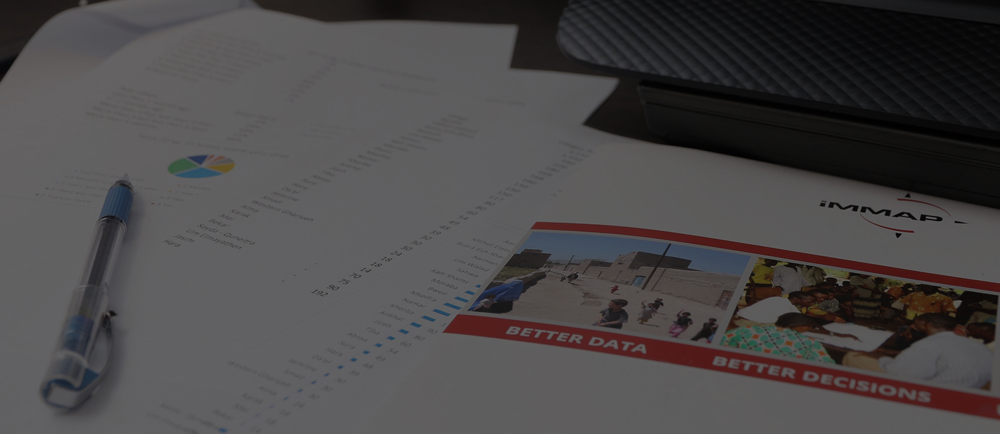

<div class="main-content">
    <div class="container-fluid">
            <div id="carousel-home" class="carousel slide" data-ride="carousel">
                <!-- Indicators -->
                <ol class="carousel-indicators">
                    <li data-target="#carousel-home" data-slide-to="0" class="active"></li>
                    <li data-target="#carousel-home" data-slide-to="1"></li>
                    <li data-target="#carousel-home" data-slide-to="2"></li>
                    <li data-target="#carousel-home" data-slide-to="3"></li>
                </ol>
                
                <!-- Wrapper for slides -->
                <div class="carousel-inner" role="listbox">
                    <div class="item active">
                        
                        <div class="carousel-caption">
                            <h1>IMMAP <small>Colombia</small></h1>
                            <hr>
                            <p>iMMAP es una ONG internacional que presta servicios de manejo de información a organizaciones humanitarias y de desarrollo. 

                            A través de la gestión de la información, ayudamos a nuestros socios a dirigir la asistencia a las poblaciones más vulnerables del mundo.                                
                            </p>
                        </div>
                    </div>
                    <div class="item">
                            
                        <div class="carousel-caption">
                            <h3>Nuestra Misión</h3>
                            <hr>
                            <p>Aprovechamos el poder de la información para facilitar la toma de decisiones basadas evidencias para mejorar la vida de las personas</p>
                        </div>
                    </div>
                    <div class="item">
                        
                        <div class="carousel-caption">
                            <h3>Nuestra Visión</h3>
                            <hr>
                            <p>Prevé un mundo en el que nadie sufra por la falta de acceso a información oportuna, relevante y fiable que tenga el poder de transformar vidas</p>
                        </div>
                    </div>
                    <div class="item">
                        
                        <div class="carousel-caption">
                            <h3>Nuestra Filosofía</h3>
                            <hr>
                            <p>Mejores datos, mejores decisiones, mejores resultados</p>
                        </div>
                    </div>
                </div>
                
                <!-- Controls -->
                <a class="left carousel-control" href="#carousel-home" role="button" data-slide="prev">
                    <span class="glyphicon glyphicon-chevron-left" aria-hidden="true"></span>
                    <span class="sr-only">Previous</span>
                </a>
                <a class="right carousel-control" href="#carousel-home" role="button" data-slide="next">
                    <span class="glyphicon glyphicon-chevron-right" aria-hidden="true"></span>
                    <span class="sr-only">Next</span>
                </a>
            </div>

        <div class="row">
            <div class="col-md-12 text-center">
                  <h1>iMMAP INFORMATION MANAGEMENT SUPPORT TO COLOMBIA</h1> 
                  <hr> 
            </div>
            <div class="col-md-6">
                    <h3>Contexto</h3>  
                    <hr>
                    <p class="text-justify">
                        Los primeros indicios de una posible crisis con los migrantes venezolanos
                        se produjeron en  el 2015, con la decisión del Gobierno de Venezuela
                        de expulsar a una serie de colombianos viviendo en Venezuela cerca del
                        de la frontera. Este proceso de remoción incluyó la destrucción de muchos hogares colombianos.
                        En 2017 la crisis comenzó a llamar la atención, ya que la situación económica
                        comenzó a deteriorarse. En abril de 2018 fué creada una nueva plataforma regional, liderada por
                         la ACNUR y la OIM,  para coordinar la respuesta a la crisis.
                        IMMAP obtuvo financiación de OFDA con el fin de proporcionar apoyo en el manejo de la información
                         a OCHA, y desde entonces ha extendido su apoyo a la ACNUR y a la OIM. En la actualidad, se 
                         estima que un total de 4,3 millones de venezolanos han abandonado el país, con mas de 1.4 
                         millones en Colombia,  y con 5.000 venezolanos adicionales huyendo del país diariamente.
                    </p>
            </div>               
            <div class="col-md-6">
                    <h3>Objetivo</h3>
                    <hr>
                    <p>Proporcionar productos de gestión de la información y análisis de datos personalizados para el 
                        seguimiento y la supervisión de la respuesta humanitaria a los principales asociados, con especial 
                        atención a la aportación de capital humano y conocimientos especializados en coordinación con los 
                        sectores de la salud, el agua, el saneamiento y las redes de servicios sanitarios, así como el 
                        Foro de las organizaciones internacionales no gubernamentales, en coordinación con el GIFMM</p>                    
            </div> 
        </div>
    </div>
</div>